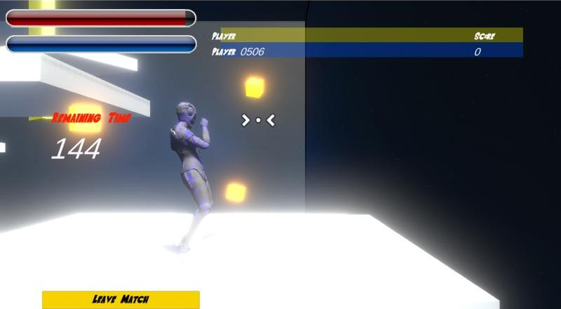
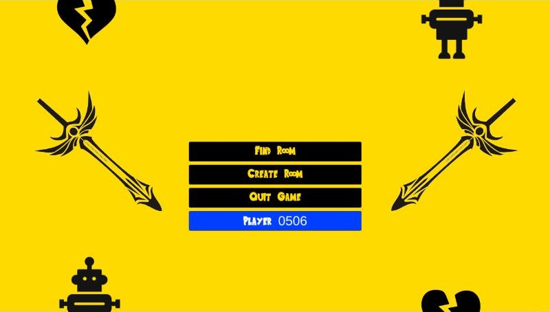
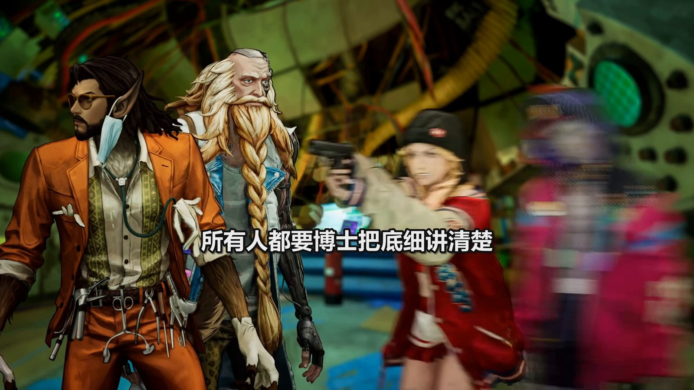

Tan Carlson · Software Engineer · Game projects
Warping Playground: my 2022 multiplayer game, playable again
My final-year project at UTAR (2022): an online multiplayer arena game for 2–4 players in the browser, built in Unity with Photon PUN 2. In October 2026 I directed Claude Code to make the build I had published on Unity Play playable again, without its source code.

Play Warping Playground
The build I published on Unity Play on 15 August 2022, recovered in October 2026. One saved connection setting changed; nothing else in the game was modified.
Play in browser →Desktop browser needed; the first load downloads about 60 MB. Multiplayer runs on Photon Cloud's free tier.
How to play
- Open the game in two browser windows (or send the link to a friend); a room takes 2–4 players.
- Window 1: Create Room, type a name, create. Window 2: Find Room, click the room to join.
- The host presses Start Room; a 180-second match begins.
- W forward, Space jump, S turn around; move the mouse to turn the character and its camera.
- Left click: melee. Right click: throw the blade; right click again calls it back. V: warp to the stuck blade. B: laser between you and the blade.
Controls as described in my 2022 report. Two-player play of the recovered build has not been re-tested yet.
The game, from my 2022 report
Each player is an armoured 3D character with their own camera. A match lasts 180 seconds. Players fight each other and yellow glowing enemies, which spawn every 3–10 seconds and fire purple bullets. The weapon is a blade you can swing, throw into a wall or the floor, warp to, or use as one end of a laser. Defeating an opponent scores +20, an enemy +5, and being defeated costs 10; a ranking board closes the match.


How the final build was recovered

wss:// (30 Oct 2026).What was wrong, and the fix
- In August 2022 I published the build on Unity Play (the link is in my report). It does not play there today (tried October 2026), and the project's source was not recovered.
- Claude Code downloaded my build files (31 MB, built 15 Aug 2022) and ran them locally: they worked over plain http.
- Likely cause: the build is set to connect to Photon over plain
ws://, the setting my report gives for localhost; browsers blockws://on https pages such as Unity Play. My report says to switch the protocol before publishing there. - Redirecting the connection to
wss://in the page failed: the name server could not parse the game's request and disconnected it, most likely because the game still encrypted it as it would on plain ws. - Fix: one byte in the build's Photon settings, protocol 4 (WebSocket) → 5 (WebSocketSecure), which gives the same secure connection as my report's publishing setting. Every other object is unchanged; the asset bundle was re-compressed. No source code was needed.
Checks
- The game now connects to Photon's servers over
wss://. - Single-player test in a browser: menu, room, start, and about 35 seconds of a match, with enemies spawning, the HP bar dropping and the timer counting down. Two-player play not yet re-tested.
- The original download and an unpatched copy are kept with SHA-256 hashes; the patch tool is on GitHub.
Who did what
- Me: built the game in 2022; found that the Unity Play copy does not play; asked for the build to be recovered; chose to show the final game.
- Claude Code: downloaded and unpacked the build, traced the failure to the connection protocol, wrote the patch tool and tested the result in a browser.
The source code I kept is an earlier prototype of the game. Claude Code also restored it and upgraded it to Unity 6.3 LTS; the changes are on GitHub: compare the original with the upgrade.
Also from my degree

2D action platformer · UECS3173 Programming with Game Engine (group of four)
"Coca Cola": a female ninja fights through four levels of moving platforms to a boss that teleports, with a slot machine that heals, buffs or swaps the weapon. As Designer I built the movement and double-jump physics, the slot machine and the audio.
Not playable: the project files are not available, so the page shows screenshots from the group's 2021 report.
See the 2D game →Also: an AI agent pipeline

Story factory: one video's run, stage by stage
My pipeline, built with Claude Code, turns a recording of a game's story scenes into a Mandarin story explainer of about half an hour. My story video with the most watch time so far (745 hours, 9,308 views) was made with an earlier, more hand-run version of it. The case file follows one October 2026 run: Claude agents read the captions and 1,764 stills of a four-hour recording, I answer their question sheet, and the script is linted and evidence-checked before it is voiced, built and QC'd.
The YouTube channel stays anonymous on the page.
See the case file →